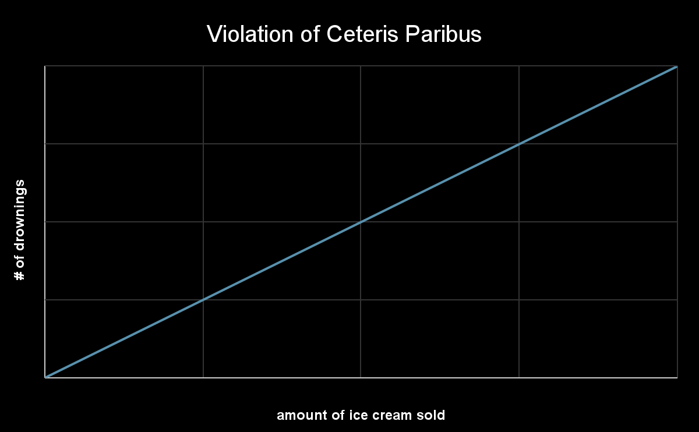

Chapter 1 - What is Economics
Economics - a social science that studies the choices we make as we come with scarcity and the incentives that influence our choices
Microeconomics - choices of individual people firms or markets
Economic model - a simplified version of real life that allows us to make predictions about people’s economic behavior
Ceteris paribus assumption - hold all other variables constant and change one thing
- Correlation does NOT equal causation

Positive statements - factual statements
Normative statements - opinions
Scarcity - the available resources are insufficient to satisfy all wants
Types of resources
- Land - any natural resource (gold, crops, water, land)
- Labor
- Capital - man made recourse (factor, building, not financial capital)
- Entrepreneurship (Orpah)
Incentive - a reward that encourages an action or a penalty that discourages an action
- Sometimes they can have unintended consequences (cobra effect, gun buyback program)
Make a rational choice requires us to compare benefits with costs
- If the benefit is larger than the cost performs the action
- If the benefit is less than the cost done perform the action
Opportunity. Cost - the value of the best alternative
- EX: job offer $100,000 (rational choice), $50,000, or $75,000
- The opportunity cause of job #2 is $100,000
- We aren’t looking for the different between them we are looking for the next best option
Free Goods still have some type of cost associated with them
Sunk cost - cost that you cannot avoid or recover (ignore cost when calculating the value of opportunity cost) (spend in either alternative or already spend)
Opportunity cost includes explicit and implicit cost
- Explicit cost - money
- Implicit cost - time or convenience (not money)
- EX: free parking in big city
- EX: attending college
- Tuition - explicit
- Transportation - sunk
- Lost wages - implicit
- Food - sunk
- Housing - sunk
- Textbook - explicit
- EX: attending concert you spend $200 on a nonrefundable ticket on the day of the concert but can’t go can resell it for $50 online
- $150 - sunk cost
- $50 - explicit
- Attending - implicit
Marginal analysis
- Marginal - additional
- Marginal benefit - the benefit from 1 additional unit
- Marginal cost - the cost from 1 additional unit
- Rule:
- If marginal benefit is greater than or equal to marginal cost, then pursue more of activity
- If marginal benefit is less than or equal to marginal cost, then pursue less of activity
- EX: studying for 2 examples (Q is number of hours studying for econ)
Q | Econ score | MB | Physics score | MC |
0 | 10% | - | 100% | - |
1 | 50% | 40% | 90% | 10% |
2 | 75% | 25% | 70% | 20% |
3 | 90% | 15% | 40% | 30% |
4 | 95% | 5% | 0% | 40% |